Mật Vụ Lô Tô
Vietnamese lô tô turned into a social deduction game for up to twelve players.Lô tô Việt Nam thành game ẩn vai cho tối đa mười hai người.
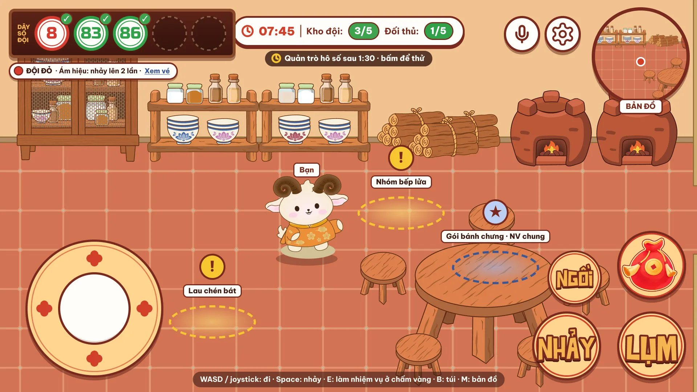
- RoleVai trò
- Game UX/UI designerGame UX/UI designer
- StatusTrạng thái
- Figma prototype and a playable web build, 2026Prototype Figma và bản chơi được trên web, 2026
- SizeQuy mô
- 80 frames, 586 prototype links80 màn, 586 liên kết prototype
- SystemHệ thống
- 96 components, 64 variables96 component, 64 biến
The problemBài toán
Lô tô is a game of waiting for your number. What if you had to find it, carry it and hide it from people you cannot trust?Lô tô là trò ngồi chờ số. Nếu bạn phải tự tìm số, mang về, và giấu khỏi những người không tin được thì sao?
- In a hurryVào nhanhQuick play from the lobby, one tap to a room.Chơi nhanh từ sảnh, một chạm là vào phòng.
- The hostChủ phòngPicks a map, 4 to 12 players, private or public, and shares a code.Chọn bản đồ, 4 đến 12 người, riêng tư hay công khai, rồi gửi mã.
- The invited friendBạn được mờiTypes a nine-digit code, or taps an invitation.Nhập mã chín số, hoặc bấm lời mời.
A screen for two thumbs and one secretMột màn hình cho hai ngón cái và một bí mật
1The goal is always on the tableMục tiêu luôn trên bàn
Five slots, top left. Filled numbers carry a tick, empty ones stay dashed, so progress needs no reading.Năm ô, góc trên trái. Số đã cất có dấu tích, ô trống viền đứt, nhìn là biết tiến độ.
2The secret takes one lineBí mật chỉ một dòng
Team and secret sign are needed rarely, so they get a thin strip. The full ticket opens on demand.Đội và ám hiệu hiếm khi cần, nên chỉ là một dải mỏng. Tờ vé đầy đủ mở khi bấm.
3Both scores in one barHai tỉ số trong một thanh
Time, your store and the rival’s. Seeing 4 out of 5 on the other side is the tension of the match.Thời gian, kho mình và kho đối thủ. Thấy bên kia 4 trên 5 chính là cao trào của trận.
4Colour and shape name the taskMàu và hình nói tên nhiệm vụ
Yellow with an exclamation mark is solo, blue with a star is shared. The dashed ring shows where to stand.Vàng có dấu chấm than là nhiệm vụ đơn, xanh có ngôi sao là nhiệm vụ chung. Vòng đứt chỉ chỗ đứng.
5Two thumbs, nothing in the middleHai ngón cái, ở giữa để trống
Walking on the left, acting on the right. Jump and pick up are the biggest keys, sit is smaller.Đi bên trái, hành động bên phải. Nhảy và lụm là hai phím to nhất, ngồi nhỏ hơn.
Flows, with the rule behind each stepLuồng, và quy tắc sau mỗi bước
One matchMột trận
From a secret team to five numbers.Từ đội bí mật tới đủ năm số.
Into a roomVào phòng
Three doors, one waiting room.Ba lối vào, một phòng chờ.
From the lobby to “Đỏ thì kinh rồi!”Từ sảnh tới “Đỏ thì kinh rồi!”
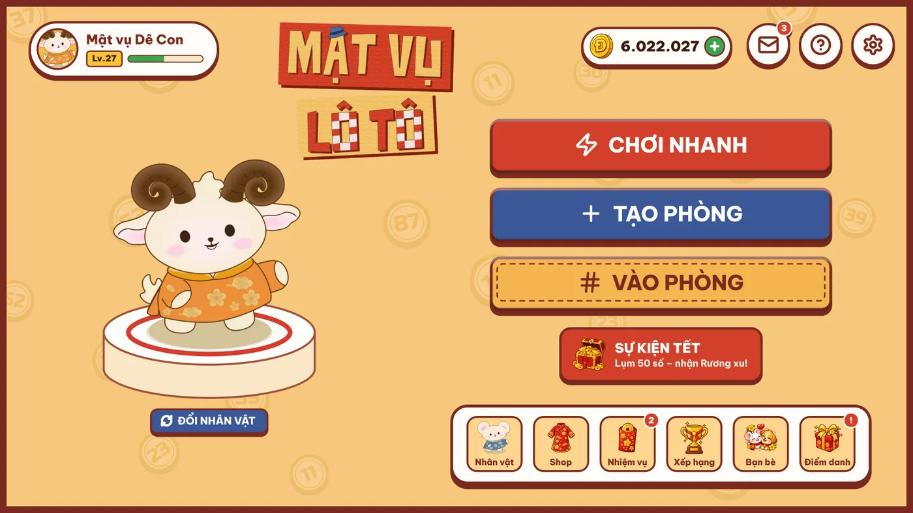
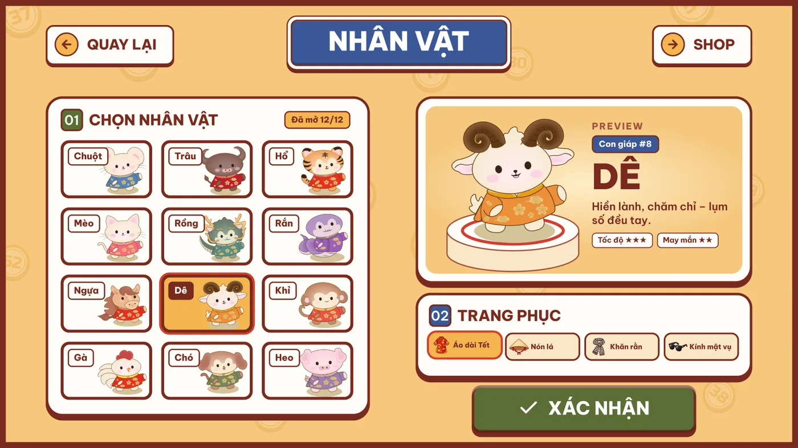
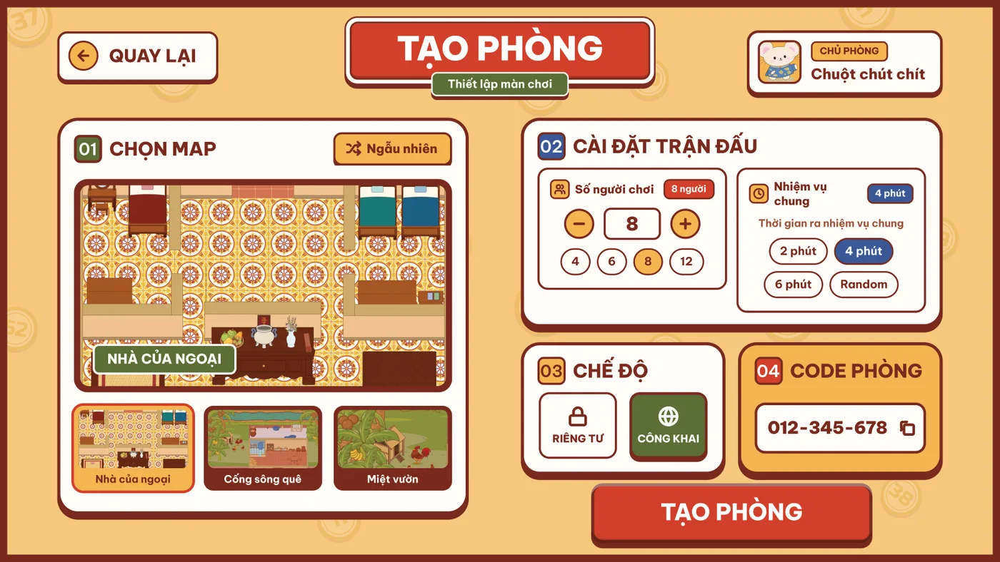
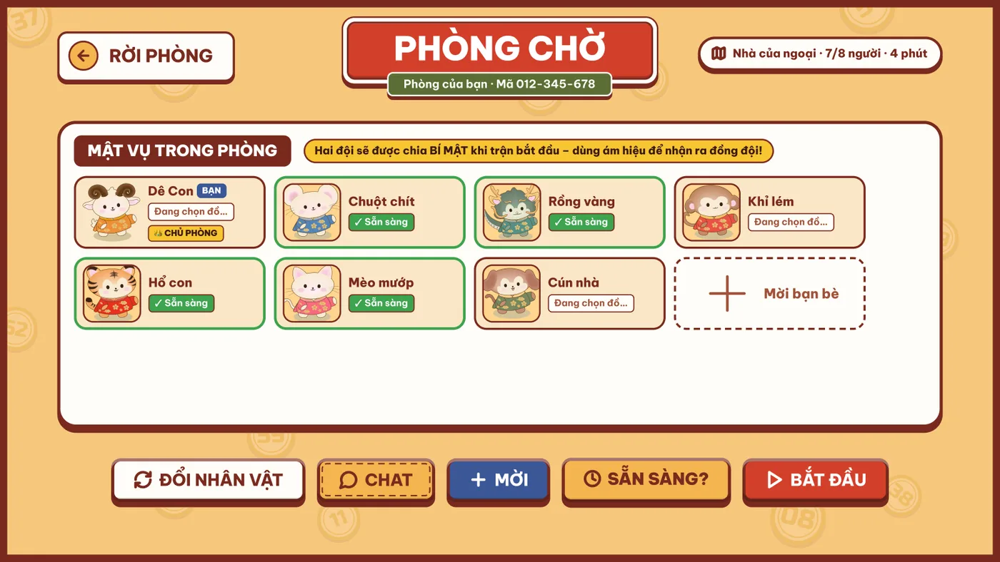
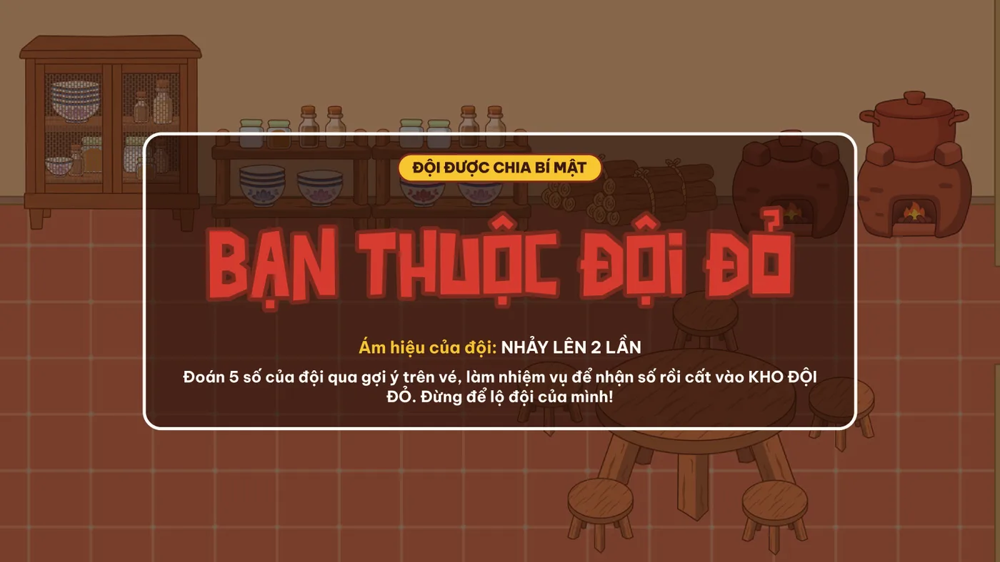
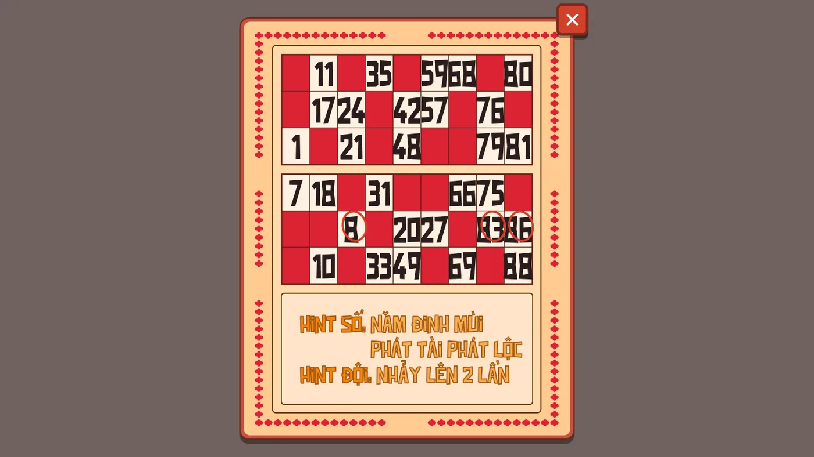
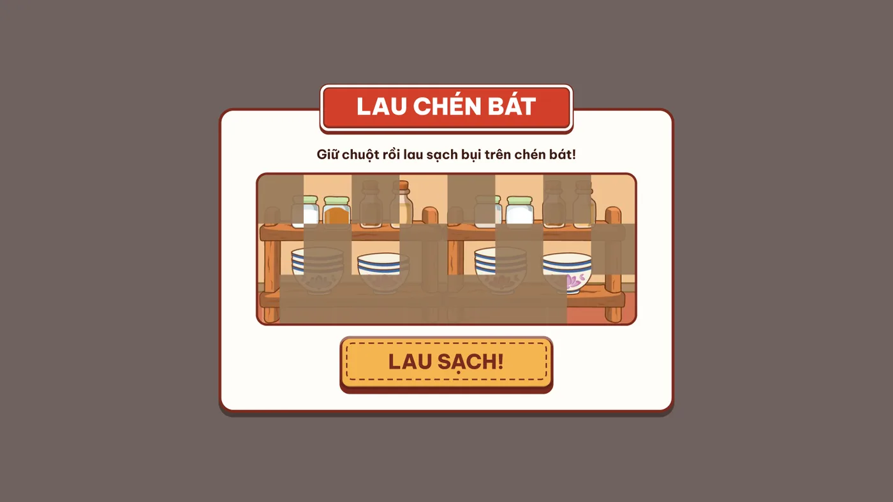
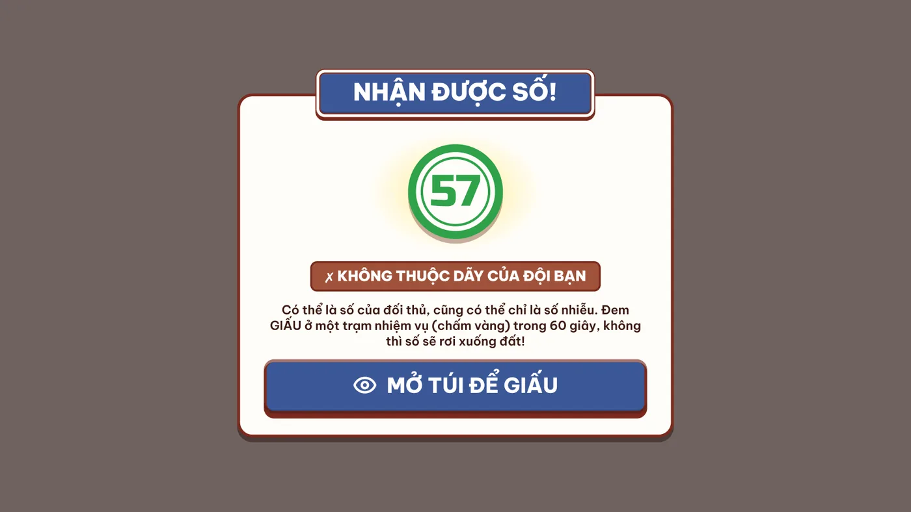
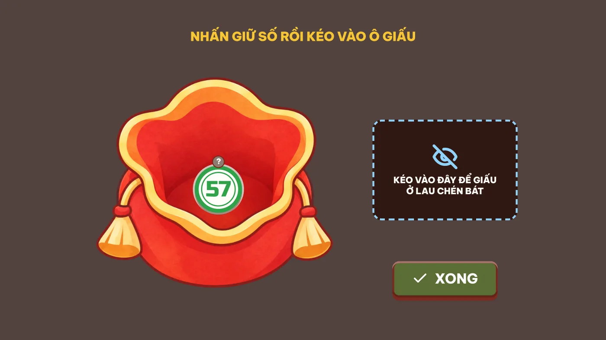
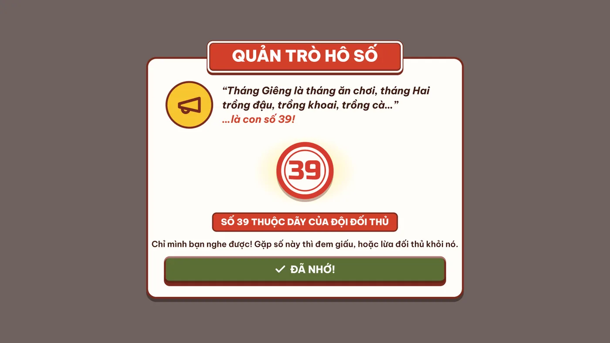
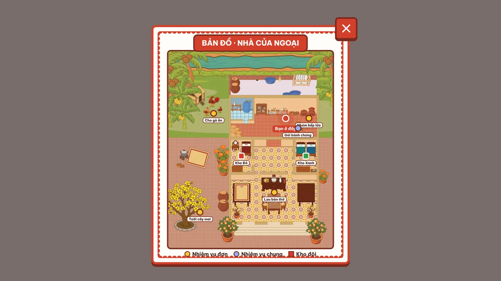
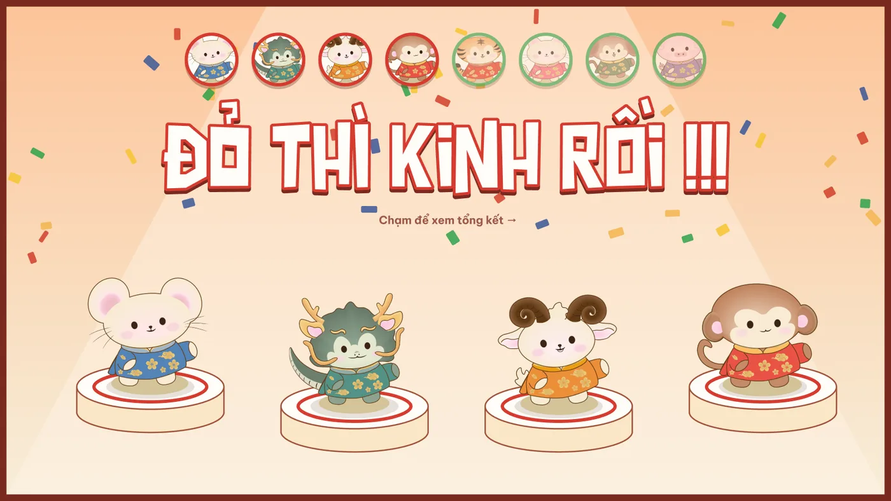
States that have a screenCác trạng thái đã có màn hình
- Wrong room codeMã phòng sai
- Room fullPhòng đầy
- Waiting for hostChờ chủ phòng
- Code copiedĐã sao chép mã
- Spot already doneTrạm đã làm
- No number hereKhông có số
- Not enough numbersChưa đủ số
- Rival at four, RÌNHĐối thủ đủ bốn, RÌNH
- Leave the room?Rời phòng?
- Leave the match?Thoát trận?
- Level upLên cấp
What was deliveredĐã làm được
- 80 frames across eight groups, from splash to after-match80 màn trong tám nhóm, từ mở game tới sau trận
- A prototype with 586 links and four named flows, so each part plays alonePrototype 586 liên kết và bốn luồng đặt tên, phần nào cũng chơi riêng được
- A web build that runs in the browser, with an offline downloadBản web chạy trên trình duyệt, có bản tải chơi offline
- 96 components and 64 variables, 43 of them holding game state96 component và 64 biến, trong đó 43 biến giữ trạng thái trận
Not proven yetChưa được chứng minh
- Playtest with groups of 4 to 12Chơi thử với nhóm 4 đến 12 người
- Check whether 60 seconds to hide a number is fairKiểm tra 60 giây để giấu số có hợp lý không
- Test the HUD on small phonesThử giao diện trong trận trên điện thoại nhỏ